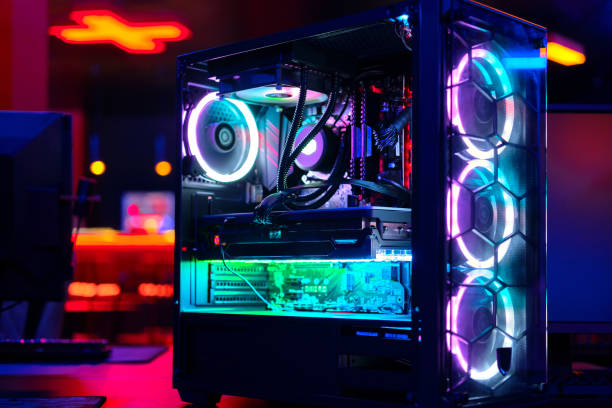
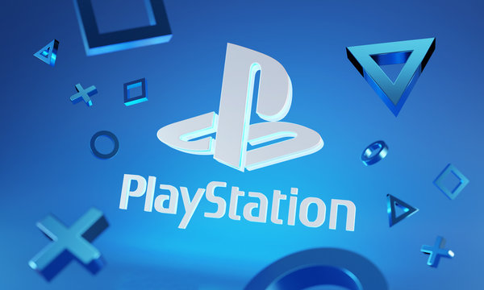
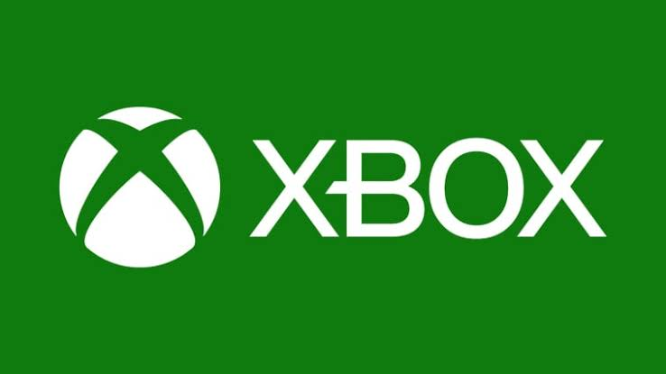
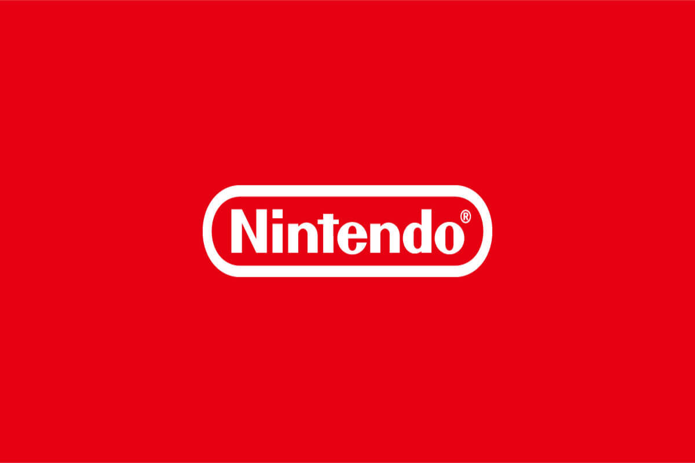
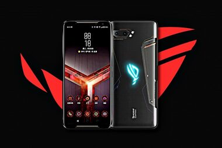
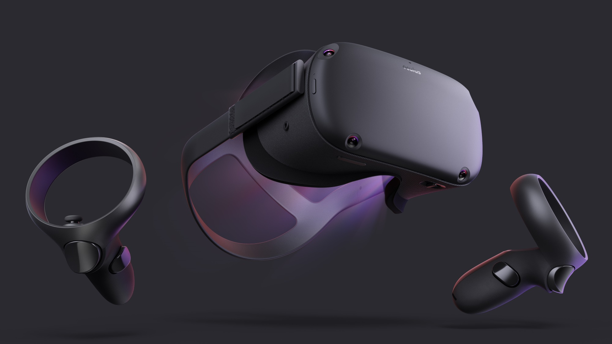

PC
Os computadores oferecem grande variedade de jogos, possibilidades de personalização e diferentes configurações de desempenho.
Descubra diferentes plataformas de jogos e conheça suas características e experiências.

Os computadores oferecem grande variedade de jogos, possibilidades de personalização e diferentes configurações de desempenho.

Os consoles PlayStation oferecem jogos exclusivos, experiências imersivas e uma grande variedade de títulos.

A plataforma Xbox oferece diversos jogos, serviços de assinatura e recursos para jogar com amigos.

A Nintendo é conhecida por seus consoles versáteis e franquias populares de jogos.

Os dispositivos móveis oferecem acesso a uma ampla variedade de jogos, permitindo jogar em qualquer lugar e a qualquer hora.

A tecnologia de realidade virtual oferece experiências imersivas e novas formas de interação com os jogos.